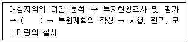
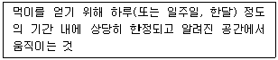
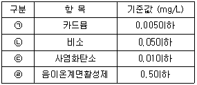
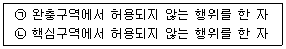

자연생태복원기사(구) (2018-08-19 기출문제)
1과목: 환경생태학개론
1. E.P. Odum의 결합법칙에 해당하는 것은?
- 열역학 제1법칙 + 열역학 제2법칙
- 독립의 법칙 + 분배의 법칙
- 최소량의 법칙 + 내성의 법칙
- 우열의 법칙 + 일정성분비의 법칙
(정답률: 65%)

2. 두 생물 간에 상리공생(mutualism) 관계에 해당하는 것은?
- 관속 식물과 뿌리에 붙어 있는 균근균
- 호도나무와 일반 잡초
- 인삼 또는 가지과 작물의 연작
- 복숭아 과수원의 고사목 식재지에 보식한 복숭아 묘목
(정답률: 92%)
3. '개체군내에는 최적의 생장과 생존을 보장하는 밀도가 있다. 관소 및 과밀은 제한요인으로 작용한다.'가 설명하고 있는 원리는?
- Allee의 원리
- Gause의 원리
- 적자생존의 원리
- 항상성의 원리
(정답률: 80%)
4. 생물다양성 유지를 위한 보호지구 설정을 위해 흔히 이용하는 도서생물지리 모형의 내용과 가장 거리가 먼 것은?
- 보호지구는 여러 개로 분산시킨다.
- 보호지구는 넓게 조성한다.
- 보호지구는 최대한 서로 가깝게 붙도록 조성한다.
- 보호지구의 형태는 원형이 유리하며, 지구간에 생태통로를 조성한다.
(정답률: 74%)
5. 지구자전, 해류의 흐름, 지형 등의 요인으로 처층의 수괴가 상층으로 유입되어 형성되며 생산력이 높은 어장이 발생하는 특징을 가지고 있는 것은?
- 저탁류(turbidky current)
- 원심력(centrifugal force)
- 용승류(upwelling)
- 적도해류(Equatorial current)
(정답률: 79%)
6. 식물에서는 종자의 전파양식이나 무성번식에 의해 일어나며 동물은 사회적 행동에 의해 서로 비슷한 종끼리 유대관계를 형성하기 때문에 나타나는 개체군의 공간분포양식은?
- 규칙분포(unifoim distribution)
- 집중분포(clumped distribution)
- 기회분포(random distribution)
- 공간분포(space distribution)
(정답률: 57%)
7. 생태적 지위(ecological niche)에 대한 설명으로 틀린 것은?
- 한 종이 생물 군집 내에서 어떠한 위치에 있는 지를 나타내는 개념이다.
- 전혀 다른 식물이 동일한 생태계지위를 가지는 경우는 없다.
- 생물이 점유하는 물리적인 공간에서의 지위를 서식장소 지위라고 한다.
- 온도, 먹이의 종류 등 환경 요인의 조합에서 나타나는 지위를 다차원적 지위라 한다.
(정답률: 85%)
8. 생태적 천이에 나타나는 특성으로 옳지 않은 것은?
- 성숙단계로 갈수록 순군집생산량이 낯다.
- 성숙단계로 갈수록 생물체의 크기가 크다.
- 성숙단계로 갈수록 생활사이클이 길고 복잡하다.
- 성숙단계로 갈수록 생태적 지위의 특수화가 넓다.
(정답률: 37%)
9. 생태계의 발전과정에 대하여 서술한 것으로 잘못된 것은?
- 생태계의 발전과정을 생태적천이 (Ecological succession)라고 한다.
- 생태계는 일정한 생장단계를 거쳐 성숙 또는 안정되며 최후의 단계를 극상(climax)이라 한다.
- 초기 천이단계에서는 생산량보다 호흡량이 많으며 따라서 순생산량도 적다.
- 성숙한 단계에서는 생산량과 호흡량이 거의 같아지므로 순생산량은 적어진다.
(정답률: 78%)
10. 1980년대 들어서 일반의 관심을 끌게 된 것으로 트리클로로에틸렌, 사염화탄소, 벤젠 등의 매립에 의해 발생한 오염은?
- 호수오염
- 해저오염
- 지하수오염
- 대기오염
(정답률: 81%)
11. 영양구조 및 기능을 함께 볼 수 있는 것으로 생태적 피라미드의 모형을 이용하는데, 다음 중 개체의 크기에 따라 역피라미드의 구조 등 변수가 많기 때문에 바람직하지 않은 생태적 피라미드는?
- 개체수 피라미드(pyramid of numbers)
- 생체량 피라미드(biomass pyramid)
- 에너지 피라미드(pyramid of energy)
- 생산력 피라미드(pyramid of productivity)
(정답률: 53%)
12. 산성비를 잘못 설명한 것은?
- 산성비의 원인은 황산이온, 잘산이온, 염소이온 등이다.
- pH 6.0 보다 높은 pH를 나타내는 강우를 말한다.
- 공장이나 자동차에서 방출되는 황산화물이나 질소산화물이 빗물에 섞여 지상으로 낙하해 온 것이다.
- 흙 속의 미네랄과 영양염을 녹여 내어 용출하기 때문에 비옥한 토양이 황폐화된다.
(정답률: 88%)
13. 생태계에서 무기물과 에너지의 흐름에 관한 설명으로 옳은 것은?
- 무기물과 에너지는 모두 순환한다.
- 무기물과 에너지는 모두 소모된다.
- 무기물은 순환하지만 에너지는 소모된다.
- 에너지는 순환하지만 무기물은 소모된다.
(정답률: 64%)
14. 호수에서 수온구배에 따른 성층을 나타내는 용어가 아닌 것은?
- 중수층(Metalimnion)
- 표수층(Epilimnion)
- 저수증 (Bottom)
- 심수층(Hypolimnion)
(정답률: 69%)
15. 몬트리올 의정서는 어떤 물질의 사용을 금지하기 위한 것인가?
- 이산화탄소
- 메탄
- 질소산화물
- 프레온가스
(정답률: 80%)
16. 개체군의 크기를 측정하는 방법 중 개체수 밀도를 측정하는 방법이 아닌 것은?
- 선차단법
- 측구법
- 대상법
- 표비교법
(정답률: 50%)
17. 질소순환 과정을 바르게 설명한 것은?
- 낙엽 등에 존재하는 유기태질소는 질산화작용에 의하여 NH4+ 형태의 무기태질소를 만든다.
- NH4+가 토양미생물에 의하여 NO3-로 산화되는 과정을 암모늄화작용이라고 한다.
- 수목의 뿌리는 이온 형태로 된 유기태질소의 형태로 흡수한다.
- 질산태질소(NO3-)는 산소공급이 부족하여 혐기성 상태가 되면, 질소가스로 환원되어 대기권으로 되돌아 간다.
(정답률: 45%)
18. 경쟁종의 공존에 대한 설명으로 틀린 것은?
- 종내경쟁이 종간경쟁 보다 더 치열한 곳에서는 두 종이 공존한다.
- 두 개체군 사이에 생태적 지위는 중복될 수 없다.
- 공존은 이용하는 자원의 차이에서 비롯된다.
- 경쟁배타의 원리에 의해 공존한다.
(정답률: 38%)
19. 생물다양성 협약의 내용으로 거리가 먼 것은?
- 유전자원 및 자연서식지 보호를 위한 전략
- 생물다양성 보전과 서식지 개발을 위한 정책
- 생물자원의 접근 및 이익공유에 관한 사항
- 생태계 내에서 생물종 다양성의 역할과 보존에 관한 기술 개발
(정답률: 39%)
20. 총 단위 공간당의 개체수로 정의되는 것은?
- 조밀도
- 고유밀도
- 생태밀도
- 분산밀도
(정답률: 60%)
2과목: 환경계획학
21. 지속가능발전과 관련하여 국토 및 지역차원에서의 환경계획 수립 시 고려해야 하는 사항이 아닌 것은?
- 인간의 활동은 환경적 고려사항에 의해서 궁극적으로 제한받아야 한다.
- 환경에 대한 우리의 부주의의 대가를 차세 대가 치르도록 해서는 안된다.
- 재생이나 순환가능한 물질을 사용하고 폐기물을 최소화함으로써 자원을 보전한다.
- 프로그램 및 정책에 대한 이행 및 관리 책임을 가장 낮은 수준의 민간에서 맡도록 해야 한다.
(정답률: 82%)
22. 지방의제21 (Local Agenda 21)의 설명 중 옳지 않은 것은?
- 1992년 브라질의 리우에서 개최된 유엔환경계획(UNEP)에서는 21세기 지구환경보전을 위한 행동강령으로서 의제21을 채택하였다.
- 의제21의 28장에서는 지구환경보전을 위한 지방정부의 역할을 강조하면서 각국의 지방정부가 지역주민과 협의하여 지방의제21을 추진하도록 권고하였다.
- 1997년 4월에는 우리나라 환경부에서 지방의제21 작성지침을 보급하고 순회 설명회를 개최하면서 지방의제21의 추진이 전국적으로 확산되었다.
- 1999년 9월 제1회 지방의제21 전국대회(제주) 이후 수차례의 토론과 협의를 거쳐 2000년 6월 지방의제21 전국협의회가 창립되었다.
(정답률: 39%)
23. 일반적으로 논의되는 토지이용계획의 역할로서 가장 거리가 먼 것은?
- 난개발의 방지 기능이다.
- 토지이용의 규제와 실행수단의 제시 기능이다.
- 정주환경의 현재와 장래의 공간구성 기능이다.
- 사회의 지속가능성을 위한 토지의 사유재산 보장기능이다.
(정답률: 82%)
24. 식생군락을 측정한 결과, 빈도(F)가 20, 밀도(D)가 10이었을 때 수도(abundance) 값은？
- 10
- 25
- 50
- 200
(정답률: 45%)
25. 일정 토지의 자연성을 나타내는 지표로서, 식생과 토지의 이용현황에 따라 녹지공간의 상태를 등급화한 것은?
- 생태자연도
- 녹지자연도
- 국토환경성평가도
- 수관밀도
(정답률: 75%)
26. 생태건축 계획의 요소와 가장 거리가 먼 것은?
- 중앙난방 계획
- 기후에 적합한 계획
- 적절한 건축재료 선정
- 에너지 손실 방지 및 보존 고려
(정답률: 82%)
27. 녹지 네트워크(green network)의 설명으로 가장 거리가 먼 것은?
- 자연의 천이와 인간과의 관계 형성을 지양한다.
- 공원 및 식생현황 등의 녹지 서식처를 유기적으로 연결한다.
- 생태네트워크와 유사하나, 네트워크를 위한 연결대상이 주로 식생, 공원, 녹지, 산림으로 제한된다.
- 녹지공간은 도시생태계의 건전성을 증진하기 위한 생태네트워크의 핵심이다.
(정답률: 65%)
28. 도시열섬의 해결책으로 적당하지 않는 것은?
- 지붕과 도로에 밝은 색을 사용하는 등 포장재료를 열반사율이 높은 것으로 교체한다.
- 수목식재를 통한 도시의 기온을 낮추고 대기 중의 이산화탄소를 줄이도록 한다.
- 비용이 적게 들고 내구성이 강한 아스팔트 포장을 권장한다.
- 수목식재를 통해 나무는 땅속의 지하수를 흡수하고 나뭇잎의 중산작용을 통해 직접적으로 주변공기를 시원하게 한다.
(정답률: 86%)
29. 환경피해에 대한 다툼과 환경시설의 설치 또는 관리와 관련된 다툼인 환경분쟁을 조정하는 방법이 아닌 것은?
- 협상
- 조정
- 재정
- 알선
(정답률: 37%)
30. 생태공원 조성의 기본 이념이 아닌 것은?
- 지속 가능성
- 생태적 건전성
- 생물적 단일성
- 인위적 에너지 투입 최소화
(정답률: 87%)
31. 자연생태복원에 관한 설명으로 옳지 않은 것은?
- 국토의 보전을 기본 입장으로 하고 있다.
- 재해의 원인이 되는 비탈면 침식의 방지, 토사유출의 방지, 수질정화，수자원 보전을 포함하고 있다.
- 자연생태복원이 어려운 장소를 확실하게 복원하기 위해 식물이 발아•생육하기 적합한 생육환경을 조성하는 것이다.
- 식재종은 훼손지역에 새로운 식물사회를 조성하는 방향으로 선정되어야 한다.
(정답률: 76%)
32. OECD에서 채택한 환경지표 구조는 압력(Pressure)-상태(Status)-대응(Response) 구조였다. 다음 환경문제를 해석하는 환경지표 중 PSR구조가 아닌 것은?
- 기후변화 : 압력(온실가스 배출) - 상태(농도) - 대응(CFC 회수)
- 부영양화 : 압력(질소, 인 배출) - 상태(농도) - 대응(처리관련 투자)
- 도시환경질 : 압력(VOCs, NOx, SOx 배출) - 상태(농도) - 대응(운송정책)
- 생물다양성 : 압력(개발사업) - 상태(생물종수) - 대응(보호지역 지정)
(정답률: 45%)
33. 생태네트워크의 특징이 아닌 것은?
- 생물다양성의 시점이다.
- 광역네트워크의 시점이다.
- 환경복원•창조의 시점이다.
- 토지경제성의 시점이다.
(정답률: 82%)
34. 생태환경 복원•녹화의 목적을 달성하기 위하여 식물군락이 갖는 환경 개선력을 살린 기술의 활용 방향으로 올바른 것은?
- 식물군락의 재생은 자연 그 자체의 힘으로는 회복이 어려우므로, 인위적으로 자연진행에 도움을 주어 회복력을 갖도록 유도한다.
- 식물의 침입이나 정착이 용이하지 않은 장소는 최소한의 복원•녹화를 추진할 필요가 없다.
- 군락을 재생할 때, 자연에 가까운 형상을 조성하기 위하여 극상군락의 식생 및 신기술을 적용하여 조성하여야 한다.
- 식물천이 촉진을 도모한다는 관점으로 자연흐름을 존중하여야 한다.
(정답률: 64%)
35. 현대적 환경관 중 자원개발을 통한 경제성장을 추구, 인간의 효용증진을 위한 양적성장을 추구하는 환경관에 해당하는 경우는?
- 낙관론자
- 조화론자
- 환경보호론자
- 절대환경론자
(정답률: 59%)
36. 자정능력의 한계를 초과하는 과다한 오염물질이 유입되면 환경은 자정작용을 상실하여 훼손되기 이전의 본래 상태로 돌아가기 어렵게 되는데 이와 같은 환경의 특성은?
- 상호관련성
- 광역성
- 시차성
- 비가역성
(정답률: 82%)
37. 참여형 환경계획에 대한 설명으로 옳은 것은?
- 시민참여는 시대•국가는 달라도 참여형태는 동일하다.
- 시민참여는 1920년대 활발히 논의되어 1980년 이후 참여형 민주주의 발전, 시민의식의 성숙과 더불어 보급된 개념이다.
- 시민참여는 환경계획에 직•간접으로 이해관계가 있는 시민들만이 참여하는 방법이다.
- 환경정책 수립이나 계획과정이 정부주도의 하향식, 밀실구조에서 탈피하여 이해 당사자가 공동이익을 추구함으로써 환경의 질을 높이기 위한 과정이다.
(정답률: 61%)
38. 옴부즈만(Ombudsman) 제도에 관한 설명으로 틀린 것은?
- 1809년 독일에서 최초로 창설되었다.
- 조선시대의 신문고 제도 및 암행어사 제도와 유사한 제도이다.
- 다른 자관에서 처리해야 할 성격의 민원에 대해서 친절히 안내하는 기능을 한다.
- 행정기관의 위법-부당한 처분 등을 시정하고 국민에게 공개하는 등의 민주적인 통제기능을 한다.
(정답률: 53%)
39. 비정부기구로 생물다양성과 환경위협에 관심을 가지며 기후변화 방지, 원시림 보존, 해양보존, 유전공학연구의 제한，핵확산 금지 등을 위해 활동하는 국제민간협력기구의 명칭은?
- 그린피스(Greenpeace)
- 세계자연보호기금(WWF)
- 세계자연보전연맹(IUCN)
- 지구의 친구(Friends of the Earth)
(정답률: 75%)
40. 환경부장관이 국가차원의 환경보전을 위해 수립하는 '국가환경종합계획'의 수립 주기는?
- 5년
- 10년
- 20년
- 30년
(정답률: 65%)
3과목: 생태복원공학
41. 야생동물 이동을 위한 생태통로의 기능으로 가장 거리가 먼 것은?
- 천적 및 대형 교란으로부터 피난처 역할
- 단편화된 생태계의 연결로 생태계의 연속성 유지
- 야생동물의 이동로 제공
- 종의 개체수 감소
(정답률: 83%)
42. 반딧불이 서식을 유도하는 자연형 하천복원은 어떤 수생생물종의 서식을 필요로 하는가?
- 왕잠자리
- 소금쟁이
- 깔다구
- 다슬기
(정답률: 75%)
43. 서식처 적합성(habitat suitability) 분석을 가장 적절하게 설명한 것은?
- 희귀종이나 복원의 목표 종을 최우선적으로 고려할 경우 무관한 다른 환경요인들을 배제시키는 기법
- 생태조사 결과를 토대로 보전할 것인지, 복원할 것인지를 결정하는 기법
- 제안된 개발사업이 생태계 혹은 생태계의 구성요소에 미치는 잠재적 영향을 파악하고, 계량화하여 평가하는 기법
- 생물종별로 요구되는 서식처 조건을 지수화하고, 그 지수를 토대로 가장 적합한 생물종 서식처를 도출하는 기법
(정답률: 83%)
44. 콘크리트관을 이용하여 측구를 설치할 때 우수가 충만하여 흐를 경우의 유량(m3/s)은? (단, 평균 유속 = 2m/s, 콘크리트관의 규격 = 0.4 × 0.6 m)
- 2.16
- 1.24
- 0.96
- 0.48
(정답률: 67%)
45. 야생동물 이동통로는 생태적 네트워크가 필수적으로 갖추어져 있어야 한다. 이와 같은 지역에 해당되지 않는 것은?
- 주요 서식처 유형의 보전을 확보하기 위한 핵심지역(core area)
- 개별적 종의 핵심지역간 확산 및 이주를 위한 회랑 또는 디딤돌
- 서식처의 다양성을 제한하고 최대크기로의 네트워크의 확산을 위한 자연지역
- 오염 또는 배수 등 외부로부터의 잠재적 위험으로부터 네트워크를 보호하기 위한 완충지역
(정답률: 72%)
46. 미티게이션에서 식물종을 보호, 보전하는 방법으로서 귀중종을 이식할 때 발생하는 문제점으로 가장 거리가 먼 것은?
- 생활사, 생활환경에 대한 정보 부족
- 이식지 선정, 서식환경 정비 정보 부족
- 귀중종과 일반종의 동시 이식
- 부족한 경험에도 불구하고 이식실패가 허용되지 않음
(정답률: 52%)
47. 토양표본을 칭량병에 넣고 덮개를 덮은 채 신선토양의 무게(Sf)를 달고, 1⑤°C에서 무게가 변하지 않을 때까지 건조시킨 후 토양의 무게(Sd)를 달았다. 그 결과 신선토양의 무게(Sf)는 278g, 말린 토양의 무게(Sd)는 194g 이었다. 이 토양의 함수량(%)은? (단, 측정한 무게는 칭량병의 무게를 제외한 토양만의 무게이다.)
- 27.5
- 29.3
- 35.2
- 43.3
(정답률: 49%)
48. 자연형 하천복원에 활용하는 야자섬유 재료의 규격 및 설치기준으로서 틀린 것은?
- 야자섬유 두루마리의 규격은 길이 4m × 지름 0.3m 크기의 실린더형을 표준으로 한다.
- 야자섬유망의 규격은 폭 1m × 길이 10m를 표준으로 한다.
- 야자섬유로프는 100% 야자섬유의 불순물을 제거한 후 두께 5~6mm로 꼬아 만든다.
- 야자섬유망은 사면에 철근 착지핀을 1개/m2 이상 박아 견고히 설치한다.
(정답률: 53%)
49. 환경포텐셜에 관한 설명 중 옳은 것은?
- 입지포텐셜은 기후, 지형, 토양 등의 토지적인 조건이 어떤 생태계의 성립에 적당한가를 나타내는 것이다.
- 종의 공급포텐셜은 먹고 먹히는 포식의 관계나 자원을 둘러싼 경쟁관계 등 생물간의 상호작용을 나타내는 것이다.
- 천이의 포텐셜은 생태계에서 종자나 개체가 다른 곳으로부터 공급의 가능성을 나타내는 것이다.
- 종간관계의 포텐셜은 시간의 변화가 어떤 과정과 어떤 속도로 진행되며 최종적으로 어떤 모습을 나타내는가를 보여주는 가능성을 나타내는 것이다.
(정답률: 58%)
50. 대기에 포함된 함량은 0.03%에 지나지 않으며, 물 속 생명체의 운동 및 호흡에 영향을 미치는 환경요인은?
- 이산화탄소
- 산소
- 질소
- 일광
(정답률: 55%)
51. 생태계의 복원원칙에 대한 설명으로 옳은 것은?
- 도입되는 식생은 생명력이 강한 외래수종을 우선적으로 사용한다.
- 각 입지별로 통일된 생태계로 조성할 수 있도록 복원계획을 수립한다.
- 적용하는 복원효과를 잘 검증할 수 있는 우선 순위 지역을 선정하여 복원계획을 시행한다.
- 개별적인 생물 구성요소의 회복에 중점을 두도록 한다.
(정답률: 65%)
52. 식물과 곤충과의 관련성을 고려한 분류 체계에서 식물의 잎을 섭식하는 곤충은?
- 화분매개충
- 흡즙곤충
- 식엽곤충
- 위생곤충
(정답률: 81%)
53. 목본식물 중 질소 고정식물이 아닌 것은?
- 자귀나무
- 오리나무
- 소귀나무
- 때죽나무
(정답률: 48%)
54. 식물군락의 순1차생산력은 생태계의 형태에 따라 매우 다양하다. 우리나라와 일본의 순1차생 산력의 범위(t/ha/년)는?
- 1~5
- 10~15
- 20~25
- 25~30
(정답률: 57%)
55. 산림생태계의 산불피해지역에서 그루터기 움싹재생(stump sprouting)을 하지 않는 수종은?
- 소나무
- 신갈나무
- 물푸레나무
- 참싸리
(정답률: 63%)
56. 생태적으로 바람직한 대체습지 조성 시 고려해야 할 것이 아닌 것은?
- 면적이 동일해야 한다.
- 동일 유역권내에 있어야 한다.
- 기능이 동일해야 한다.
- 가급적 가까운 거리(on-site)에 있어야 한다.
(정답률: 75%)
57. 자연환경복원을 위한 생태계의 복원과정에서 ( )에 적합한 것은?

- 적용기술 선정
- 공청회 개최
- 예산 확인
- 복원목적의 설정
(정답률: 76%)
58. 담수역에 있어서 관수저항이 강한 식물(생존기간 85일간 이하)에 해당하는 것은?
- 잔디, 골풀, 갈대, 회양목
- Kentucky bluegrass, 줄, 줄사철나무
- tall fescue, orchard grass, 돈나무
- perennial ryegrass, 영산흥, 송악
(정답률: 61%)
59. 주야로 차량통행이 많은 산림 계곡부를 지나는 도로 상에 야생동물 이동통로를 조성하는 경우, 이동통로 유형의 적합성에 대한 설명이 맞는 것은?
- 육교형이 터널형보다 더 적합하다.
- 터널형이 육교형보다 더 적합하다.
- 육교형이나 터널형 모두 비슷하다.
- 육교형 이나 터널형 모두 부적합하다.
(정답률: 49%)
60. 파종중량(W)의 산출식으로 옳은 것은? (단, G : 발생기대본수(본/m2), S : 평균입수(입/g), P : 순량률(%), B : 발아율(%))
- G / S×P×B
- S / G×P×B
- S×P×B / G
- G×P×B / S
(정답률: 54%)
4과목: 경관생태학
61. 인위적인 자연적 방해 작용으로 군집의 속성이 보다 단순하고 획일화되는 천이는?
- 퇴행적 천이
- 건성 천이
- 중성 천이
- 진행적 천이
(정답률: 75%)
62. 비오톱(biotope)의 의미로 가장 적당한 것은?
- 다양한 생물종이 함께 어울려 하나의 생물사회를 이루고 있는 공간으로서 다양한 생태계를 포함하는 지역이다.
- 유기적으로 결합된 생물군 즉, 생물사회의 서식공간으로 최소한의 면적을 가지며 주변공간과 명확히 구별할 수 있도록 균질한 상태의 곳으로 볼 수 있다.
- 농경지, 산림, 호수，하천 등의 다양한 생태계가 서로 인접한 지역으로서 이들 생태계 사이의 기능적인 관계가 잘 연계된 곳이다.
- 어떤 생물이라도 그 종족을 유지하기 위한 유전자 풀(pool)의 다양성이 유지될 수 있는 습지공간을 말한다.
(정답률: 45%)
63. 원격탐사자료(satellite remote sensing data)의 유리한 특징만을 모아놓은 것은?
- 광역성，동시성, 단발성
- 동시성，주기성, 표현성
- 주기성, 개방성，표현성
- 동시성, 광역성，주기성
(정답률: 76%)
64. 환경영향평가를 위하여 시행하는 영향예측에 필요한 판단 기준으로 부적합한 것은?
- 경관의 변화 정도
- 자연 생태계의 단절 여부
- 종다양성의 변화 정도
- 조경 수목의 형태별 특성
(정답률: 70%)
65. 야생동물 복원에서 야생동물 종의 움직임에 대한 고려는 매우 중요하다. 다음 설명에 해당하는 움직임은?

- 이동(dispersal)
- 이주(migration)
- 돌발적 이동(eruption movement)
- 행동권 이동(home range movement)
(정답률: 77%)
66. 도시경관생태의 특징은 도시기후가 교외나 그 주변지역과 비교하여 다른 성질을 나타낸다는 것인데, 이러한 현상 중 가장 뚜렷한 것이 도심을 중심으로 기온이 상승하는 현상이다. 이러한 도시의 비정상적인 기온 분포는?
- 미기후
- 온실효과
- 이질효과
- 열섬효과
(정답률: 84%)
67. 비오톱 지도화 방법 중 유형분류는 전체적으로 수행하고, 조사 및 평가는 동일 유형(군)내 대표성이 있는 유형을 선택하여 추진하는 것은?
- 선택적 지도화
- 배타적 지도화
- 대표적 지도화
- 포괄적 지도화
(정답률: 64%)
68. 특정 목적을 가지고 실세계로부터 공간자료를 저장하고 추출하며 이를 변환하여 보여주거나 분석하는 강력한 도구는?
- 원격탐사
- 범지구측위시스템(GPS)
- 항공사진판독
- 지리정보시스템
(정답률: 74%)
69. GIS로 파악이 가능한 자연환경정보의 내용으로 볼 수 없는 것은?
- 토지 피복
- 지표면의 온도
- 식물군락유형구분
- 대기오염물질의 종류
(정답률: 80%)
70. 비오톱 지도화에는 선택적 지도화, 포괄적 지도화, 대표적 지도화로 구분되어 사용된다. 포괄적 지도화의 설명에 해당하는 것은?
- 보호할 가치가 높은 특별지역에 한해서 조사하는 방법
- 도시 및 지역단위의 생태계 보전 등을 위한 자료로 활용 가능
- 대표성이 있는 비오톱을 조사하여 유사한 비오톱 유형에 적용하는 방법
- 비오톱에 대한 많은 자료가 구축된 상태에서 적용이 용이
(정답률: 47%)
71. 인간과 물이 만나는 수변공간의 특성에 해당되지 않는 것은?
- 사람의 오감을 통해 전달되는 풍요로움과 편안함을 주는 정서적 효과
- 수면 상에 있는 물건을 실제보다 가깝게 보이게 하는 효과
- 도시공간을 일체적이고 안정된 분위기로 만드는 효과
- 도시의 소음을 정화시켜 주는 효과
(정답률: 59%)
72. 메타개체군 개념을 적용한 종 또는 개체군의 복원방법이 아닌 것은?
- 포획번식
- 방사
- 돌발적 이동
- 이주
(정답률: 73%)
73. 경관생태학에서 경관을 구성하는 요소가 아닌 것은?
- 조각(patch)
- 바탕(matrix)
- 통로(corridor)
- 비오톱(biotope)
(정답률: 78%)
74. 종-면적 관계식(S = cAz)에 대한 설명으로 맞는 것은?
- A는 종다양성을 나타낸다.
- 면적과 종수의 관계 그래프는 직선으로 나타난다.
- 다양한 군집안에서 채집된 표본수와 종의 수를 이용하였다.
- c값은 연구지의 특성에 따라 다르다.
(정답률: 51%)
75. 생태학적 원리를 자연관리에 응용하는 생태기술의 기반으로 틀린 것은?
- 자연 자원의 흐름 경로
- 물질의 이동 형태
- 유전 구조
- 물질의 이동 원리
(정답률: 67%)
76. 우리나라의 광역적 그린네트워크를 형성할 때, 생태적 거점핵심지역(main core area)으로 작용하기 어려운 곳은?
- 자연공원
- 생태•경관보전지역
- 천연보호구역
- 도시근린공원
(정답률: 77%)
77. 경관조각의 생성요인에 따른 분류가 아닌 것은?
- 회복조각
- 도입조각
- 환경조각
- 재생조각
(정답률: 29%)
78. 인위적 사구 육성방법이 아닌 것은?
- 사구보강
- 대체습지육성
- 해변육성
- 수면 밑 해안육성
(정답률: 60%)
79. MAB(Man and Biosphere)의 이론에 근거한 지역구분을 올바르게 나열한 것은?
- 보존지역 - 유보지역 - 잠재적 개발지역
- 핵심지역 - 완충지역 - 전이지역
- 핵심지역 - 완충지역 - 유보지역
- 전이지역 - 유보지역 - 보존지역
(정답률: 79%)
80. 도시생태계가 갖는 독특한 특성이 아닌 것은?
- 태양에너지 이외에 화석과 원자력에너지를 도입하여야 하는 종속영양계이다.
- 외부로부터 다량의 물질과 에너지를 도입하여 생산품과 폐기물을 생산하는 인공생태계이다.
- 도시개발에 의한 단절로 인하여 생물다양성의 저하가 초래되어 생태계 구성요소가 적은 편이다.
- 모든 구성원 사이의 자연스러운 상호관계가 일어난다.
(정답률: 72%)
5과목: 자연환경관계법규
81. 국토기본법상 국토계획에 해당하지 않는 것은?
- 국토종합계획
- 도종합계획
- 지역계획
- 지구단위계획
(정답률: 51%)
82. 환경정책기본법령상 국토의 계획 및 이용에 관한 법률에 따른 주거지역 중 전용주거지역의 밤(22:00 ~ 06:00)시간대 소음환경기준은? (단, 일반지역이며，단위는 Leq dB(A))
- 40
- 45
- 50
- 55
(정답률: 60%)
83. 환경정책기본법령상 아황산가스(SO2)의 대기환경기준으로 옳은 것은? (단, 1시간 평균치)
- 0.02ppm 이하
- 0.06ppm 이하
- 0.10ppm 이하
- 0.15ppm 이하
(정답률: 42%)
84. 습지보전법상 용어의 정의로 옳지 않은 것은?
- "습지"란 담수•기수 또는 염수가 영구적 또는 일시적으로 그 표면을 덮고 있는 지역으로서 내륙습지 및 연안습지를 말한다.
- "내륙습지"란 육지 또는 섬에 있는 호수, 못, 늪 또는 하구(河口) 등의 지역을 말한다.
- "연안습지"란 만조 시에 수위선과 지면이 접하는 경계선 지역을 말한다.
- "습지의 훼손"이 란 배수(排水), 매립 또는 준설 등의 방법으로 습지 원래의 형질을 변경하거나 습지에 시설이나 구조물을 설치하는 등의 방법으로 습지를 보전 목적 외의 용도로 사용하는 것을 말한다.
(정답률: 70%)
85. 습지 보전법규상 습지보호지 역 중 4분의 1 이상에 해당하는 면적의 습지를 불가피하게 훼손하게 되는 경우 당해 습지보호지역 중 존치해야 하는 비율은?
- 지정 당시의 습지보호지역 면적의 2분의 1 이상
- 지정 당시의 습지보호지역 면적의 3분의 1 이상
- 지정 당시의 습지보호지역 면적의 4분의 1 이상
- 지정 당시의 습지보호지역 면적의 10분의 1 이상
(정답률: 67%)
86. 환경정책기본법령상 하천의 수질 및 수생태계 환경기준으로 옳지 않은 것은? (단, 사람의 건강보호 기준)

- ㉠
- ㉡
- ㉢
- ㉣
(정답률: 50%)
87. 자연환경보전법상 생물다양성 보전을 위한 자연환경조사 관한 내용으로 옳은 것은?
- 환경부장관은 관계중앙행정기관의 장과 협조하여 10년마다 전국의 자연환경을 조사하여야 한다.
- 환경부장관은 관계중앙행정기관의 장과 협조하여 매 5년마다 생태 • 자연도에서 1등급 권역으로 분류된 지역의 자연환경을 조사하여야 한다.
- 환경부장관 둥이 자연환경조사를 위하여 조사원으로 하여금 타인의 토지에 출입하고자 하는 경우，그 조사원은 출입할 날의 3일 전까지 그 토지의 소유자 • 점유자 또는 관리인에게 그 뜻을 통지하여야 한다.
- 규정에 의한 조사 및 관찰에 필요한 사항은 국무총리령으로 정한다.
(정답률: 35%)
88. 야생생물 보호 및 관리에 관한 법률 시행규칙상 살처분한 야생동물 사체의 소각 및 매몰기준 중 매몰 장소의 위치와 거리가 먼 것은?
- 하천, 수원지, 도로와 30m 이상 떨어진 곳
- 매몰지 굴착과정에서 지하수가 나타나지 않는 곳(매몰지는 지하수위에서 lm 이상 높은 곳에 있어야 한다)
- 음용 지하수 관정(管井)과 50m 이상 떨어진 곳
- 주민이 집단적으로 거주하는 지역에 인접하지 않은 곳으로 사람이나 동물의 접근을 제한할 수 있는 곳
(정답률: 46%)
89. 백두대간 보호에 관한 법률상 다음의 행위를 한 자에 대한 각각의 벌칙기준으로 옳은 것은?

- ㉠ 7년 이하의 징역 또는 7천만원 이하의 벌금, ㉡ 5년 이하의 징역 또는 5천만원 이하의 벌금
- ㉠ 5년 이하의 징역 또는 5천만원 이하의 벌금, ㉡ 7년 이하의 징역 또는 7천만원 이하의 벌금
- ㉠ 5년 이하의 징 역 또는 5천만원 이하의 벌금, ㉡ 3년 이하의 징역 또는 3천만원 이하의 벌금
- ㉠ 3년 이하의 징 역 또는 3천만원 이하의 벌금, ㉡ 5년 이하의 징역 또는 5천만원 이하의 벌금
(정답률: 66%)
90. 독도 등 도서지역의 생태계 보전에 관한 특별법상 특정도서에서 입목•대나무의 벌채 또는 훼손한 자에 대한 벌칙기준으로 옳은 것은? (단, 군사•항해•조난구호행위 등 필요하다고 인정하는 행위 등은 제외)
- 6개월 이하의 징역 또는 5백만원 이하의 벌금
- 1년 이하의 징역 또는 1천만원 이하의 벌금
- 3년 이하의 징역 또는 3천만원 이하의 벌금
- 5년 이하의 징역 또는 5천만원 이하의 벌금
(정답률: 36%)
91. 자연공원법령상 자연공원의 지정기준과 거리가 먼 것은?
- 자연생태계의 보전상태가 양호할 것
- 훼손 또는 오염이 적으며 경관이 수려할 것
- 문화재 또는 역사적 유물이 있으며, 자연경관과 조화되어 보전의 가치가 있을 것
- 산업개발로 경관이 파괴될 우려가 있는 곳
(정답률: 73%)
92. 다음 중 습지보전법의 목적으로 가장 거리가 먼 것은?
- 습지의 효율적 보전·관리에 필요한 사항을 정한다.
- 습지오염에 따른 국민건강의 위해를 예방하고，습지개발을 통하여 국민으로 하여금 그 혜택을 널리 향유할 수 있도록 한다.
- 습지에 관한 국제협약의 취지를 반영함으로써 국제협력의 증진에 이바지한다.
- 습지와 습지의 생물다양성의 보전을 도모한다.
(정답률: 67%)
93. 야생생물 보호 및 관리에 관한 법률시행규칙상 멸종위기 야생생물 I 급의 곤충류에 해당되지 않는 것은?
- 산굴뚝나비 (Hipparchia aatonoe)
- 상제나비 (Aporia crataegi)
- 수염풍뎅이 (Polyphylla laticollis manchurica)
- 애기뿔소똥구리 (Copris tripartitus)
(정답률: 57%)
94. 자연환경보전법규상 생태통로의 설치기준으로 옳지 않은 것은?
- 생태통로의 길이가 길수록 폭을 좁게 설치한다.
- 주변의 소음•불빛•오염물질 등 인위적 영향을 최소화하기 위하여 생태통로 양쪽에 차단벽을 설치하되, 목재와 같이 불빛의 반사가 적고 주변환경에 친화적인 소재를 사용한다.
- 배수구 일부 지점에 경사가 완만한 탈출구를 설치하여 작은 동물의 이동이 용이하도록 하고, 미끄럽지 아니한 재질을 사용한다.
- 생태통로 중 수계에 설치된 박스형 암거는 물을 싫어하는 동물도 이동할 수 있도록 양쪽에 선반형 또는 계단형의 구조물을 설치하며, 작은 배수로나 도랑을 설치한다.
(정답률: 82%)
95. 자연환경보전법상 환경부장관이 수립해야 하는 '자연환경보전을 위한 기본방침'에 포함되어야 할 사항과 거리가 먼 것은?
- 중요하게 보전하여야 할 생태계의 선정, 멸종 위기에 처하여 있거나 생태적으로 중요한 생물종 및 생물자원의 보호
- 생태•경관보전지역의 관리 및 해당 지역주민의 삶의 질 향상
- 산•하천•내륙습지•농지•섬 등에 있어서 생태적 건전성의 향상 및 생태통로•소생태계•대체자연의 조성 등을 통한 생물다양성의 보전
- 자연환경개발에 관한 교육과 국가 주도 개발 활동의 활성화
(정답률: 61%)
96. 야생생물 보호 및 관리에 관한 법률 시행령상 “야생생물 보호 기본계획”에 포함되어야 할 사항과 가장 거리가 먼 것은? (단, 야생생물 보호 세부계획과 비교)
- 야생생물의 현황 및 전망, 조사•연구에 관한 사항
- 관할구역의 주민에 대한 야생생물 보호 관련 교육 및 홍보에 관한 사항
- 국제적 멸종위기종의 보호 및 철새 보호 등 국제협력에 관한 사항
- 수렵의 관리에 관한 사항
(정답률: 52%)
97. 국토의 계획 및 이용에 관한 법률 시행령상 기반시설의 분류 중 “방재시설'에 해당하는 것은?
- 공동구 • 시장
- 유류저장 및 송유설비
- 하수도
- 유수지
(정답률: 57%)
98. 국토의 계획 및 이용에 관한 법률상 국토의 용도구분에 해당되지 않는 지역은?
- 도시지역
- 준도시지역
- 관리지역
- 자연환경보전지역
(정답률: 68%)
99. 국토기본법상 특정 지역을 대상으로 특별한 정책목적을 달성하기 위하여 수립하는 계획으로 옳은 것은?
- 국토종합계획
- 부분별 계획
- 시 • 군종합계획
- 지역계획
(정답률: 45%)
100. 생물다양성 보전 및 이용에 관한 법률상 생물다양성 및 생물자원의 보전에 관한 사항으로 옳지 않은 것은?
- 환경부장관은 국내에 서식하는 생물종의 학명(學名), 국내 분포 현황 등을 포함하는 국가 생물종 목록을 구축하여야 한다.
- 국가 생물종 목록의 구축 대상•항목 및 방법 등에 관한 사항은 환경부령으로 정한다.
- 환경부장관은 생물다양성의 보전을 위하여 보호할 가치가 높은 생물자원으로서 대통령령으로 정하는 기준에 해당하는 생물자원을 관계 중앙행정기관의 장과 협의하여 국외반출승인대상 생물자원으로 지정•고시할 수 있다.
- 환경부장관은 반출승인대상 생물자원의 국외반출 승인을 받은 자가 거짓이나 그 밖의 부정한 방법으로 승인을 받은 경우에는 그 승인을 취소하여야 한다.
(정답률: 50%)